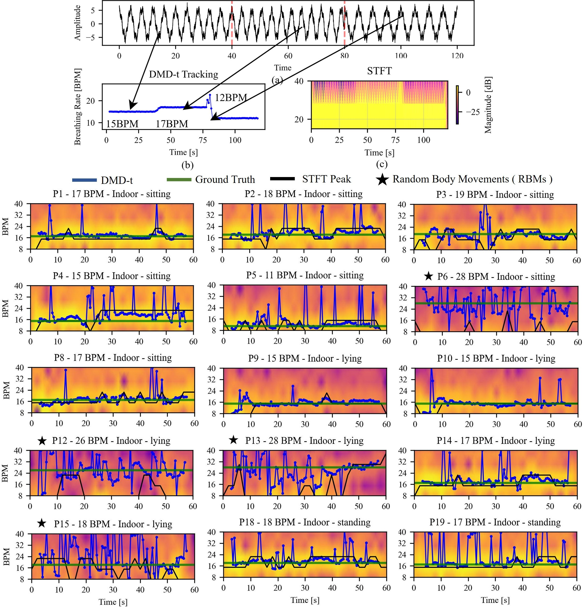

Non-contact respiratory monitoring in uncontrolled environments is a critical unmet need for applications ranging from remote healthcare to search and rescue. While low-power radar is a promising sensing modality, its effectiveness is severely limited by environmental clutter and signal non-stationarity, which cause traditional signal processing pipelines to fail.
We present a novel framework for respiratory sensing and tracking that overcomes these limitations by leveraging Hankel Dynamic Mode Decomposition (HDMD) with temporal tracking. Our approach treats the noisy time-series data as the output of a dynamical system and decomposes it into a set of coherent oscillatory modes, enabling the robust isolation of the respiratory signal without requiring extensive hyperparameter tuning.
We evaluate our method on a dataset of 24 subjects recorded with a compact pulsed radar in diverse indoor and outdoor conditions. The proposed HDMD pipeline significantly outperforms established decomposition baselines, achieving an NRMSE of 6.00% indoors and 1.33% outdoors, substantially reducing the Root Mean Square Error (RMSE) compared to next-best methods.
Our approach combines task-specific phase extraction with Hankel-embedded Dynamic Mode Decomposition for robust respiratory monitoring. The pipeline first localizes the subject and extracts a continuous phase signal representing chest wall displacement. This signal is then embedded into a high-dimensional space using a Hankel matrix, allowing the linear Koopman operator to approximate the underlying dynamics.
Standard Fourier Analysis (STFT) often fails to capture non-stationary respiratory signals. We utilize DMD-based tracking (DMD-t) which performs iterative decomposition within overlapping windows. This allows us to track evolving dynamics and distinguish stable breathing from random body movements (RBMs).

Comparison of DMD-t tracking (left) vs STFT (right) on subject data.
HDMD consistently outperforms baseline methods (VMD, EEMD, DWT) across 24 participants. It achieves state-of-the-art NRMSE of 6.00% indoors and 1.33% outdoors.
Tip for the author: Take a screenshot of Figure 2 (Signal Reconstruction) and Table 2 (Results) from your PDF, save them as "reconstruction.png" and "results_table.png", and place them in the static/images/ folder to make them appear below.
@inproceedings{krishna2025hdmd,
author = {Krishna, M Gopal and Grover, Suhani and Dhiman, Chhavi},
title = {Hankel Dynamic Mode Decomposition for Radar-Based Respiratory Sensing and Tracking},
booktitle = {NeurIPS Workshop on Learning to Sense},
year = {2025},
}